Ongoing Technical Analysis of Financial Markets
For sure financial advice - More on Substack &
Twitter
Tylerisyoung.Substack.com
Twitter.com/TylerisYoung
_________________________
Financial Dashboard
Markets
Current Best Buy
Fair Valuewhere each asset sits vs its own long-term log regression trend
Formulas (click to open)
Trendline: ln(Price) = a + b × ln(days since the asset began), fit by least squares on weekly closes over all available history (a power-law, the same kind of log regression used for bitcoin). "Began" = launch or listing date (bitcoin: the Jan 3, 2009 genesis block; treasury companies: the day they started holding coins).
Fair value = the trendline today: e^(a + b × ln(days)) · Bar = Price ÷ Fair value − 1 · σ = how far that is in standard deviations of the asset's own history around the line (−2σ = rarely this cheap).
By asset class: for AI, Crypto and Commodities, each member's distance from its own trendline is averaged every week (in log terms, members with 2+ years of prices), so 0% = the class as a whole sits on fair value.
Needs at least 2 years of prices to fit a trend, so the newer treasury companies and SPCX aren't shown. A trendline describes the past; it isn't a forecast.
Comparative Valuewhich asset is most beaten down against its own history
Formulas (click to open)
Gaps: g₂₀w = ln(Price ÷ EMA₂₀w) and g₂₀₀d = ln(Price ÷ EMA₂₀₀d), with EMAₜ = α·xₜ + (1 − α)·EMAₜ₋₁, α = 2/21 on weekly closes and 2/201 on daily closes.
Volatility-adjusted (z-score): z = g ÷ standard deviation of g over the last ~2 years (520 trading days). A −10% gap is a big deal for SPY (≈ −2σ) but routine for a SOL treasury stock (≈ −0.5σ).
ATH bonus: DD = 1 − Price ÷ ATH (highest close since 2016; treasury companies only since they started holding coins).
Value score (bar): −(z₂₀w + z₂₀₀d) ÷ 2 + 0.75 × DD. Higher = cheaper. Assets need 30 days of history.
Projected Growthtoday's price vs the forecasters' 2030 targets
| Value signals | Price targets | |||||||||||
|---|---|---|---|---|---|---|---|---|---|---|---|---|
| Ticker | Price | Below ATH | vs 20-wk EMA | vs 200-day EMA | Value score | Low target | Median target | High target | Avg 12-mo return | At NAV 1.0x | CAGR to 2030 | Avg 2030 return |
Formulas (click to open)
Targets: Low / High = lowest / highest 2030 target. Median = median of all 2030 targets, except BTC, SOL, TSLA: 0.5 × InvestAnswers + 0.5 × average of the others.
Conversions: GLD, SLV, CPER = metal target × ETF price ÷ metal price today · SPY = S&P 500 target ÷ 10.02 · copper $/lb = $/t ÷ 2,204.62 · UUUU, SILJ, MP = price on the target date × sector 2030 target ÷ sector price on that date (uranium, silver, avg of uranium/silver/gold/copper), locked in dollars.
Treasury companies: CPS = coins ÷ shares · mNAV = Price ÷ (CPS × coin price) · Target = coin 2030 target × CPS × √mNAV (NAV assumed halfway back to 1.0x) · At NAV 1.0x = Price ÷ CPS and CPS × coin median target.
12-month return: each ~1-year target is restated to exactly 12 months from today: if it's further out, Price × (Target ÷ Price)^(12 ÷ months); if it's sooner, it's carried forward along the path to the median 2030 target. Expired targets are dropped. Stocks use the analyst consensus (12 months from its date).
Returns: Avg 2030 return = Median ÷ Price − 1 (ranking) · CAGR = (Median ÷ Price)^(1/Y) − 1, Y = years to Dec 31, 2030 (bar) · Colors: yellow → green by rank; faded red = negative.
Sources for every price target (click to open)
Every forecaster behind the low, median and high targets, with the date it was published and a link. Targets checked . To add your own 2030 target for any asset, set it in USER_INPUT at the top of the targets section in scripts/update_market_data.py; it then counts as one more source.
BTC and Solana Treasury Companies
| Ticker | Coin | Share Price | Market Cap | HOLD Assets | HOLD QTY | HOLD $ | Crypto Per $ Invested | NAV Premium |
|---|
This Week's Best Buys
Formula (click to open)
Each asset gets two ranks, turned into a 0–100 score (100 = 1st place): Value = its place on the Comparative Value chart, Growth = its place on the Projected Growth chart (avg 2030 return).
Overall = (Value score + Growth score) ÷ 2. The ten highest overall are shown; ties go to the higher Growth score. The backtests buy the top 5.
Backtests
Backtest formulas, stats & limits (click to open)
Weekly buying: target weight per pick = bucket weight ÷ bucket's picks; gap = max(0, target × (portfolio + $135) − current value); the $135 is split in proportion to the gaps (any leftover by target weight).
Monthly (first Monday): for any bucket above bucket weight × portfolio, the excess is sold in equal dollar amounts from its holdings above bucket target ÷ holdings in the bucket (never below that, never a whole position). Proceeds + the $135 go to underweight buckets by how far under they are.
Stats: Money-weighted return = the yearly rate that makes every $135 deposit grow into the ending value (IRR, the right measure for DCA). Time-weighted return = yearly growth of the portfolio with deposits stripped out. Volatility = standard deviation of weekly returns × √52. Max drawdown = worst peak-to-trough fall of the time-weighted line. Sharpe ratio = (weekly return − fed funds rate) ÷ weekly volatility × √52; above 1 is strong.
Prices: dividend-adjusted closes where they exist (SPY, AVGO, NVDA, MU, SILJ); gold and copper via GLD and CPER. Assets join once they have 30 days of prices (SPCX from July 2026; treasury companies from when they started holding coins).
Limits: Backtests 2–4 rank on today's 2030 price targets for every past week, which flatters them (they "know" where forecasts ended up). Backtest 1 (value only) and Backtest 5 (equal weight) use prices only. Today's coin holdings are used for past weeks. All five also carry survivorship bias: the 20 names were chosen in 2026, knowing which ones made it (SOL, NVDA, MU), so every backtest beats what someone picking in 2020 could have done. No trading costs. A backtest, not a promise.
Backtest 1: Value Score Only, Top 5, Since March 2020
Week-by-week buys (click to open)
| Week of | Buying that week | Strategy | S&P |
|---|
Backtest 2: Top 5, Last 12 Months
Week-by-week buys (click to open)
| Week of | Buying that week | Strategy | S&P |
|---|
Backtest 3: Top 5, Since March 2020
Week-by-week buys (click to open)
| Week of | Buying that week | Strategy | S&P |
|---|
Backtest 4: Top 5 + Unowned Names, Since March 2020
Week-by-week buys (click to open)
| Week of | Buying that week | Strategy | S&P |
|---|
Backtest 5: Equal Weight, All 20 Names, Since March 2020
Week-by-week buys (click to open)
| Week of | Buying that week | Strategy | S&P |
|---|
Economy
Blog
The Fundamentals
14m Read: Modern Monetary Theory - Slow at first, then all at once.
________________________________________________________________
Ongoing Technical Analysis
________________________________________________________________
5/21/26
How QE is hiding the debt spiral without free market price discovery.
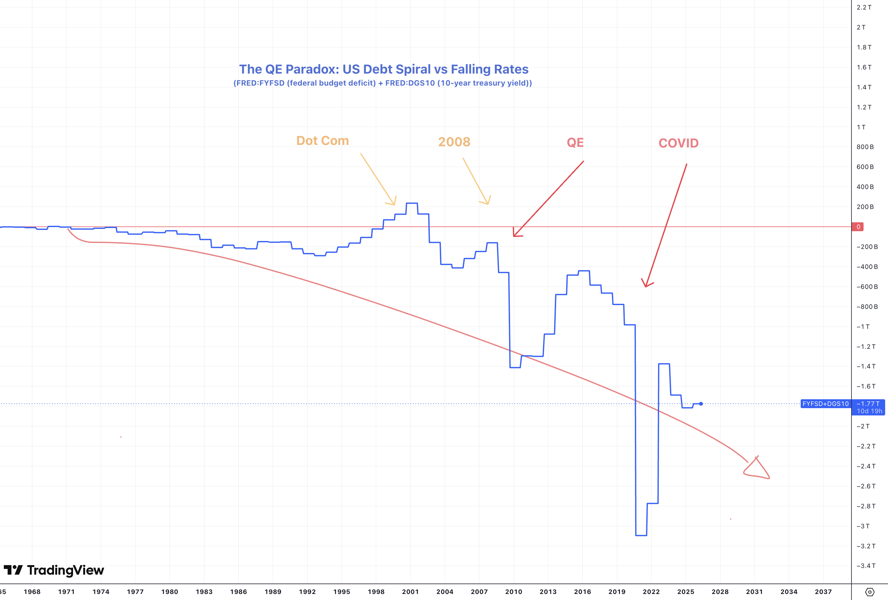
The combination of (Federal Budget Deficit + 10-Year Treasury Yield) shows The deficit measured in dollars (currently around -$1.8T annually), and the 10 year yield as a percentage (currently ~4.5%) added into one line.Free market economics dictates that this line should be mean reverting to $0. To achieve this, as we have in the past, free market discovery of bond yields is necessary, but this trend will continue and reach -$3Trillion again and extend lower as the spiral continues.
What the trend means - The deficit is so large that even with QE artificially capping yields at 4-5% (implied Yield Curve Control) the combined picture is still deeply negative, our borrowing hole is bigger than what reasonable rate normalization can offset.
What you’d expect (normal economics - leading into the dot com bubble when we had a slight budget surplus) When the government runs bigger deficits, it has to borrow more. More borrowing means more bond supply - bond prices fall - yields rise. Bigger deficits should mean higher interest rates to close the gap and the chart goes above 0 indicating free market risk in US Treasuries (UST).
QE changes that.
Since the 80s, deficits have grown almost continuously, but the 10-year yield went from ~15% down to nearly 0% instead of up. That’s the paradox of QE hiding the debt spiral. When long term treasury yields began to rise too rapidly, the Fed began to buy treasuries (Quantitative Easing) masking price discovery for government debt, and until recently, global demand for UST’s as a safe reserve asset held steady too helping keep prices high and yields low despite ballooning supply, but relief is temporary and the fun is over.
Deficits are too high, liabilities exceed receipts, M2 and inflation will remain elevated to fund everything, and demand for UST’s will dry up in a multipolar commodity driven world.
________________________________________________________________
5/19/26
If you’re not confused, you’re lying! High Oil and a semi-permeable strait lead straight to Multipolarity, AI is priced in, and BTC as the liquid macro signal.
Equity breadth is unexpectedly at multi year highs. The top stocks are carrying the team, but everything else is catching up after lagging for a decade. Does this mark a healthy and recovering trend, or is this an anomaly as EVERYTHING else is in a macro downtrend including GDP, retail sales, the jobs report, payrolls, openings, consumer confidence, and more while inflation remains sticky. But as bubble discussions reach the mainstream, as the hyperscalers reach peak hype and the capex loop slows down, the tide at the top is now turning too. As breadth declines and as the MAG 7 reach PE ratios that can never be justified, both breadth as well as the high flyers may decline at the same time.
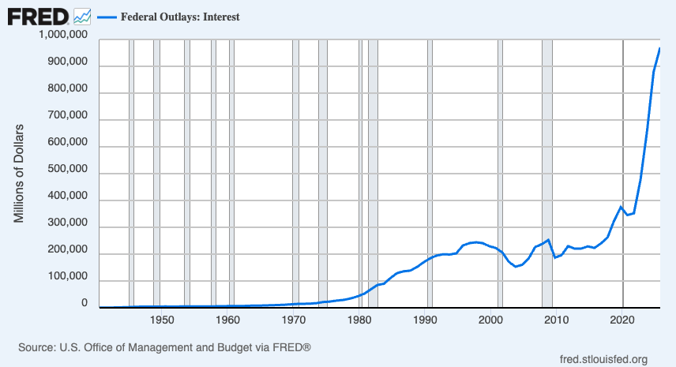
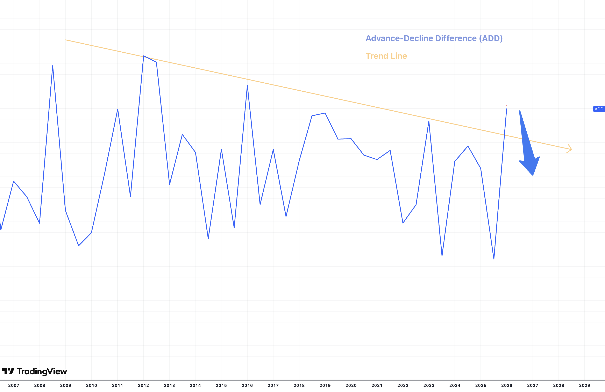
US Govt debt interest payments and entitlements are above income tax and foreign receipts kicking off the debt spiral. The circle is higher interest rates, stronger dollar, slower growth, lower rates, more printing, higher inflation, weaker growth. But we can only kick this can down the road for so long before foreign nations loose interest in the strength of our treasuries and willingness to trade without a re-pricing of trade balances the the US. Inch by inch we move closer to a multipolar world.
The Iranians operating a taxable closure on the Strait of Hormuz while pricing some percentage of oil in Yuan only accelerates the shift away from USD which will mean more inflation, and by necessity a re-pricing of Gold as a reserve currency at least 3X, and more likely 5-8X higher than it is now even in relation to already high oil.
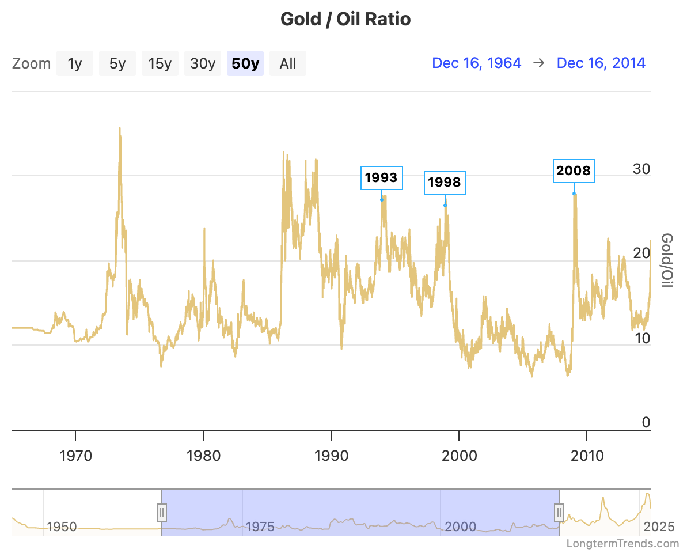
This is the macro that is happening now, and why stocks remain elevated is beyond me. There is a very good chance that we have passed the peak as measured in Gold or Oil for the MAG 7. We have two massive companies that have announced IPO’s this year - OpenAI ($850Bn) and SpaceX ($1.75Trillion).The market cannot just absorb $2Trillion of new funds into being among the top ten companies on the planet while maintaining the current market caps of (NVDA) $5.41 Trillion (GOOG) $4.66 Trillion (AAPL): $4.44 Trillion (MSFT) $3.13 Trillion (AMZN) $2.85 Trillion (TSLA) $1.57 Trillion (META) $1.54 Trillion
Total Mag 7 Market Cap: ~$23.6 Trillion
The market has finished pricing in the AI hype, and is now officially a bubble. Former Open AI employee Leopold Aschenbrenner who was ousted from the company and started his own AI investment firm recently took out an 8Bn short position against the heavy hitters in the AI space, and only remains long on datacenter buildout companies, physical contractors, and BTC miners who are pivoting. His book includes:
LONG
BE SNDK CRWV MU TSM IREN CORZ APLD RIOT CLSK BITF BTDR
SHORT
SMH NVDA ORCL AVGO AMD MU TSM ASML INTC GLW
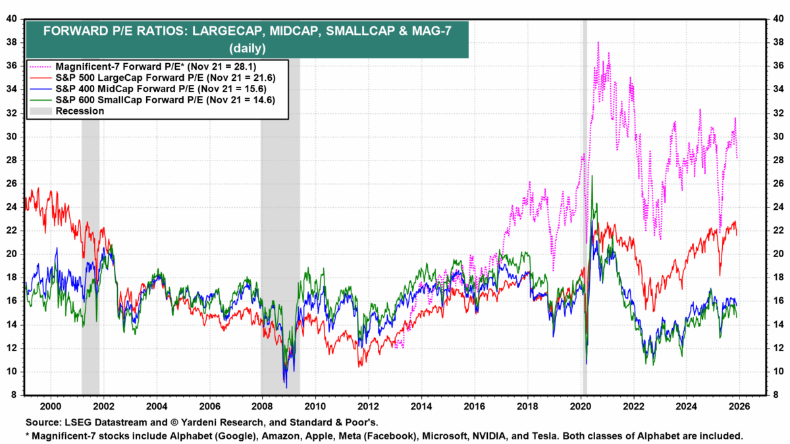
I believe the time between now and the IPO of OpenAI marks a durable top that will last until at least the end of the business cycle.
Rates will need to come all the way down, commodities will continue to have their day, the dollar will yield, and for at least a couple years, things will be slow. Only after these things happen will the market have a recovery, only next time we will be looking at some definitively different players.
BTC as the ever present macro signal has just been rejected by the 200DSMA, suggesting at least another six months of winter and weakness through the end of the year. We will see what comes.
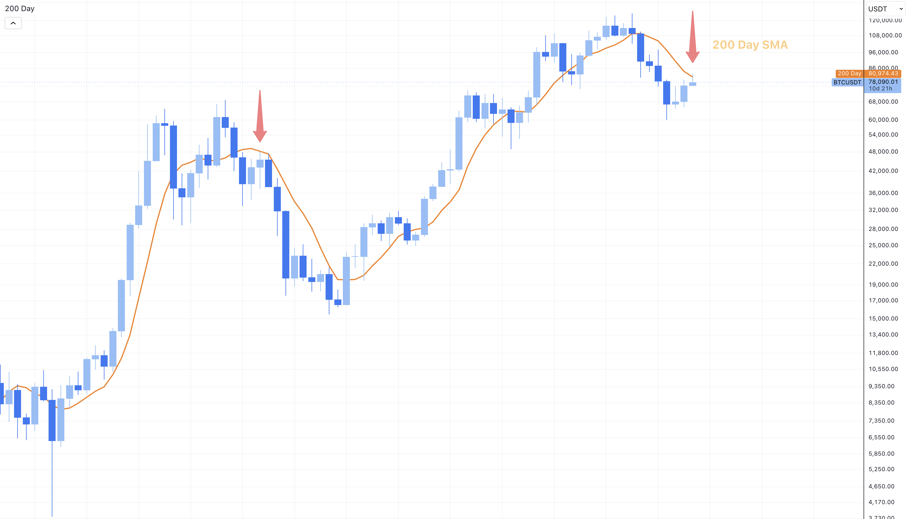
5/19/25
US Treasuries are no longer a AAA rated asset, the abyss approaches.
The market’s up…Again.
$8 trillion has come pouring back into the stock market, making up for more than half of the recent $15 trillion destruction of funds since February when the market experienced a 21% drawdown.
The driving forces are primarily a pause on the worst part of the traiffs, but something more ominous is lurking - Moodys a global credit rating organization has lowered their reliability status of US Treasuries from AAA (the highest tier) to AA1 (Just below) citing the government’s potential inability to cover unfunded liabilities.
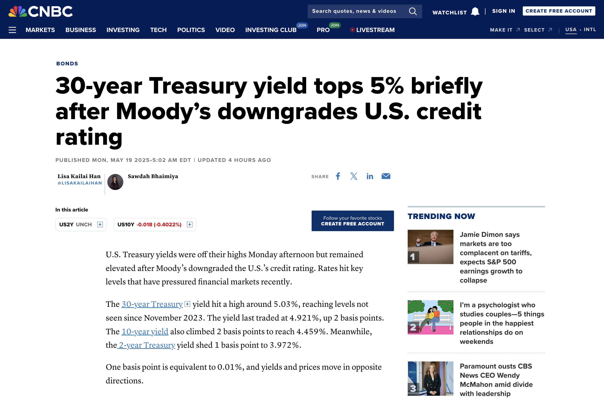
So…Is this a real recovery or just exit liquidity in a bear market rally? Bear market rallies are fast, aggressive, and often short-lived.
Looking back to 2022, the market clawed back over 75% of its losses… then plunged again over inflationary fears.
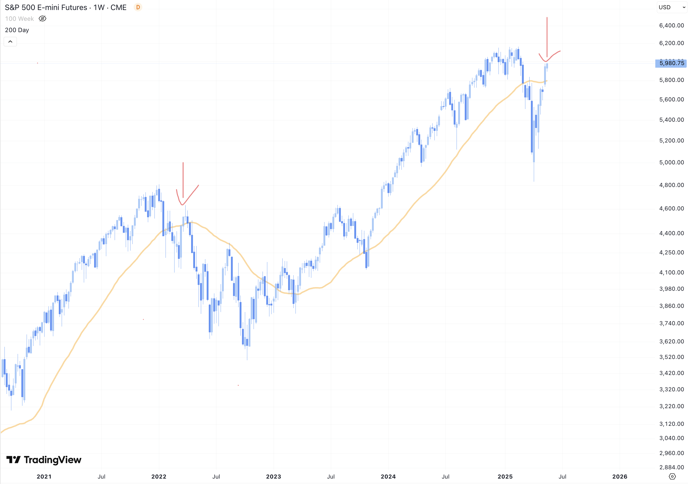
Now in 2025, we’ve recovered just over 75% once again, history may not repeat but it can rhyme. Technicals of this recovery are looking decent—S&P futures are above the 200-day moving average which was a major area of concern.
Jst remember, the same type of setup in 2022 led to a head-and-shoulders top… and a collapse.
So, it always looks good—until it doesn’t.
What is the real driving force here? It’s of course difficult to tell with so much going on, every bear market has its own story.
In 2022, it was the beginning of the Fed’s aggressive rate hikes and inflation panic and markets surged anytime investors thought the Fed might pause.
But 2025 is slightly different and no—it’s not all about tariffs - the the so called 90 day pause doesn’t mean that we’re out of the woods yet. The real issue today reduarging treasuries is interest rates and the national deficit.
We just took a big leap forward on on the escalator of America’s debt sprial.
While the majority of conservatives and mainstream have stopped worrying about the defecit, hawks have been warning for years that it would come back to bite us. After we hit 120% debt/GDP ratio in 2020, this was the point of no return - no country which has ever accumulated so much debt was able to recover without experiencing either hyper inflation, or a devaluing of the currency to gold or another comodity based assets.
This is what we have just experienced in 2025 - a devaluing of the currency through Moody’s reavaluation of US treasuries as less than a AAA rated asset to own - suggesting that the risk of the US defaulting on its debts has increased significantly.
Despite this, the current president, love him or hate him has proposed an increase to the federal deficit within his “One Big Beautiful Bill”.
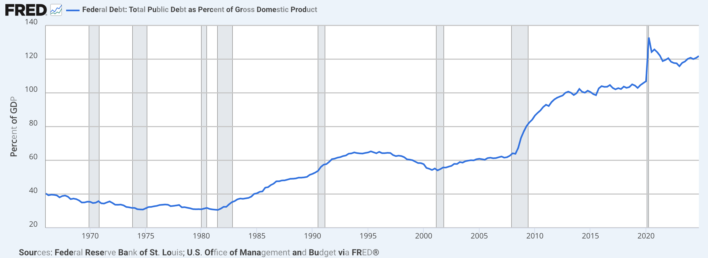
Currently, over $1 trillion now goes toward interest payments—more than we spend on defense or healthcare, and apparently our congress is jointly suggesting that we increase defence spending in order to return order to this world.
And even with weak economic growth, bond yields are rising. Why? Because investors are demanding higher returns just to hold U.S. debt. America isn’t seen as a safe bet anymore and that’s a big problem.
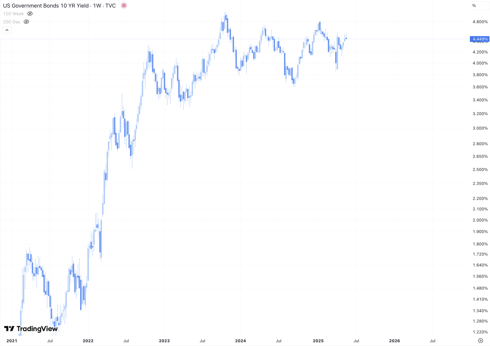
Some believe rate cuts will fix this. They won’t.
Lowering rates may actually push long-term yields higher if investors think we’re just kicking the can down the road again. Despite the efforts of Elon’s DOGE, this year we have still managed to add $1 Trillion to the defecit.
Yet Trump’s bill is still proposing tax cuts, tariff hikes and hoping for rate cuts. The CME group which monitors investor sentiment in order to predict FED rates estimates that there is an 8.6% chance of rate cuts in the FED’s June meeting, but an 86.2% chance that the fed cuts rates in October. The question will remain - are they cytting for the right reasons, or the wrong ones?
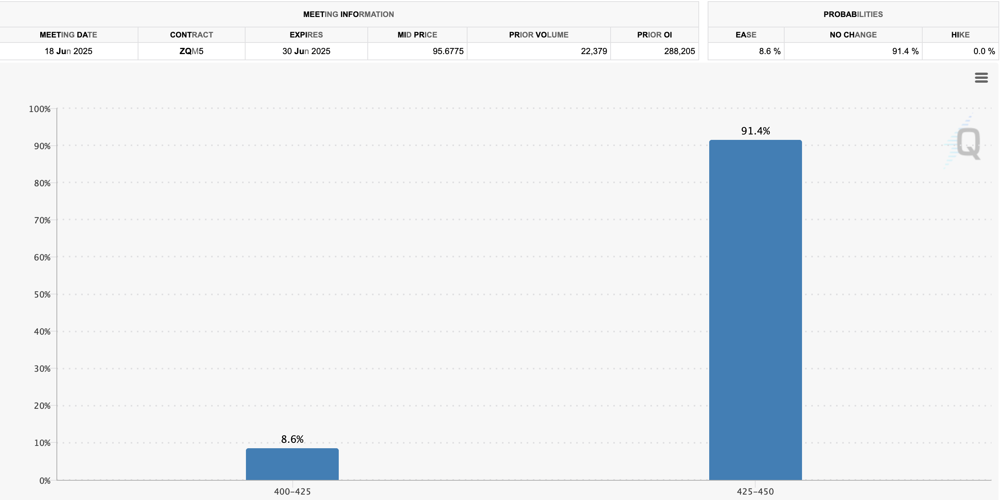
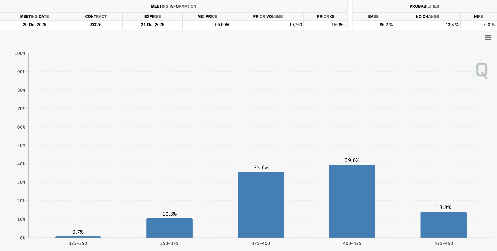
The market might look strong right now, portfolios are up and everyone feels better… but underneath it all the US is staring down the barrel of the largest financial reckoning in a generation. Maybe even the last one the dollar gets to survive in its current form.
Whatever happens next, recovery or relapse, we will be watching.
________________________________________________________________
9/28/2022
Global economic outlook is the worst it has been since 1929
Given the USD global reserve currency status, all eyes are on the fed who’s DXY dollar index is sucking liquidity from every other global currency, there are only two ways out, one goes up, and the other goes down. Until we see the path resolved, our economy will remain in a downward trending stagflation.
Is the fed done hiking? The math on total debt and interest along with the credit impulse markets say yes. Powell still needs unemployment and housing signals to come down significantly before attempting any sort of pivot, or at least pause in rate hikes. Analysts are saying that they’ll pile in at SPX 3500 if we get there, but it’s rare to see perfect entries in times of great fear. Look out below & stack cash for some great PE entries. Otherwise a verbal pivot will signal that we’re going up from here, Nasdaq and Bitcoin will be the first to rebound. Either way, we could see an october surprise i.e. bear market rally leading into midterm elections and the endgame that comes after, whatever that may be.
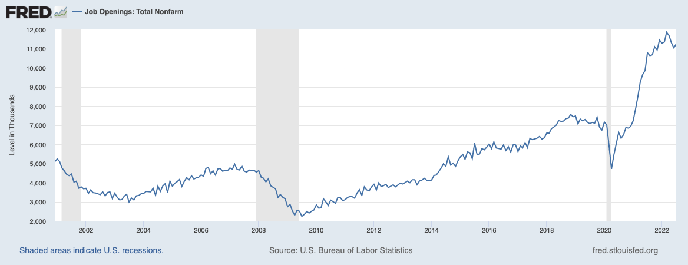
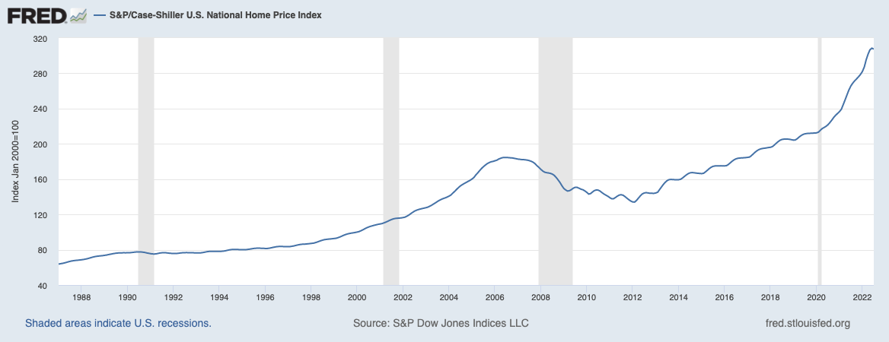
Charts thanks to Biancoresearch.
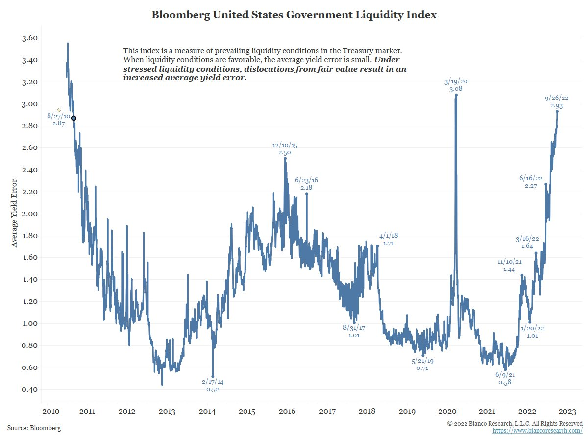
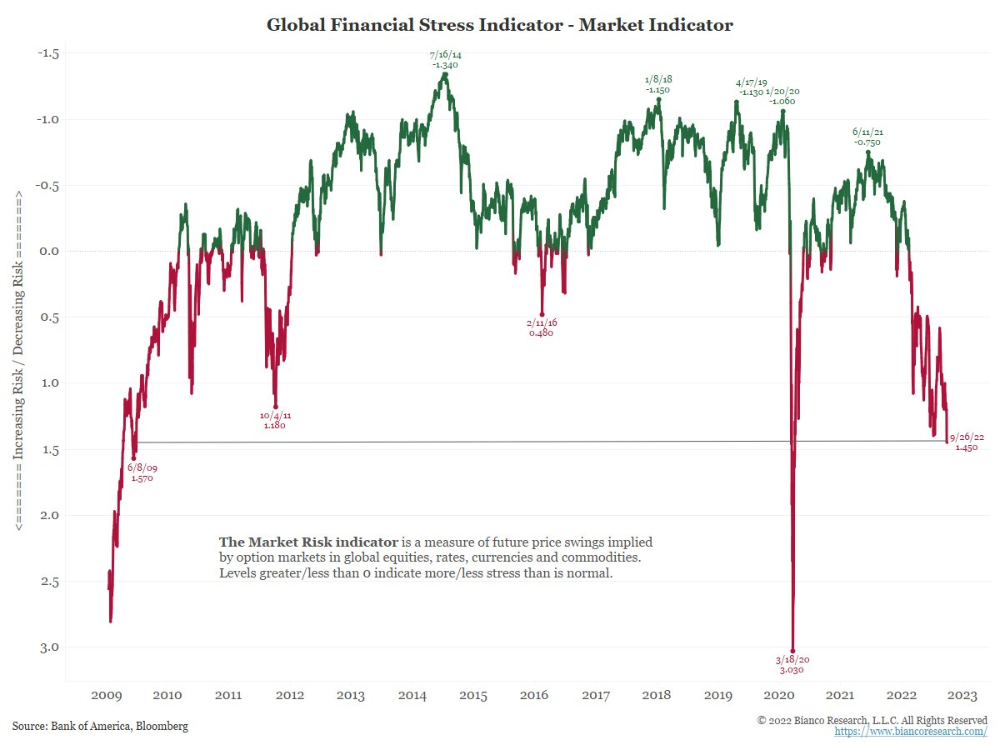
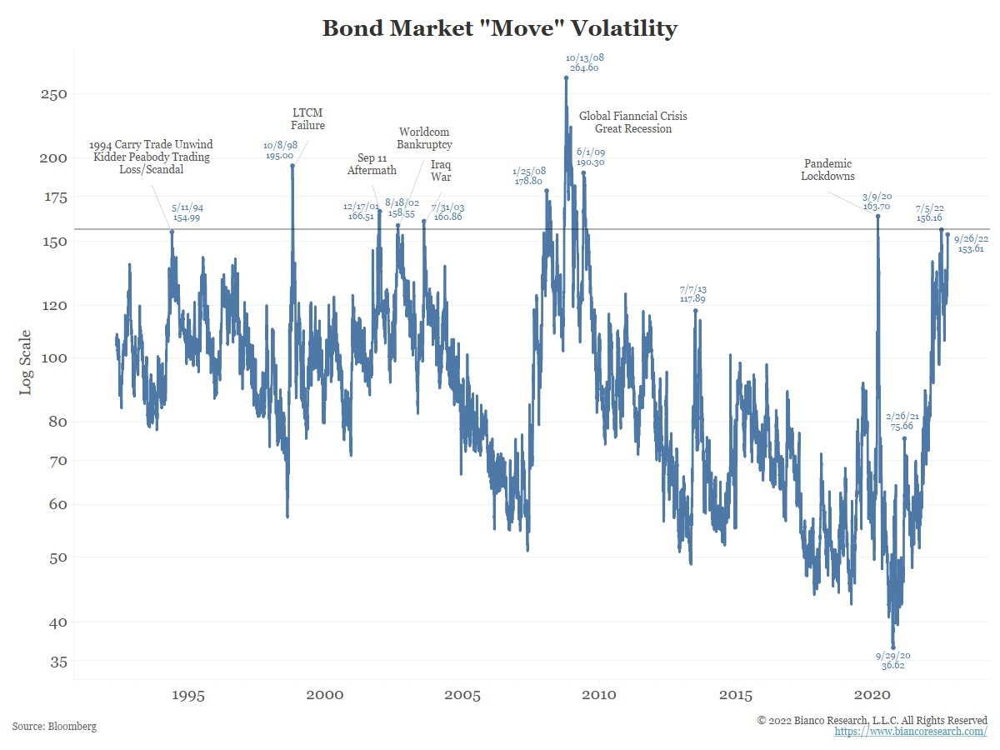
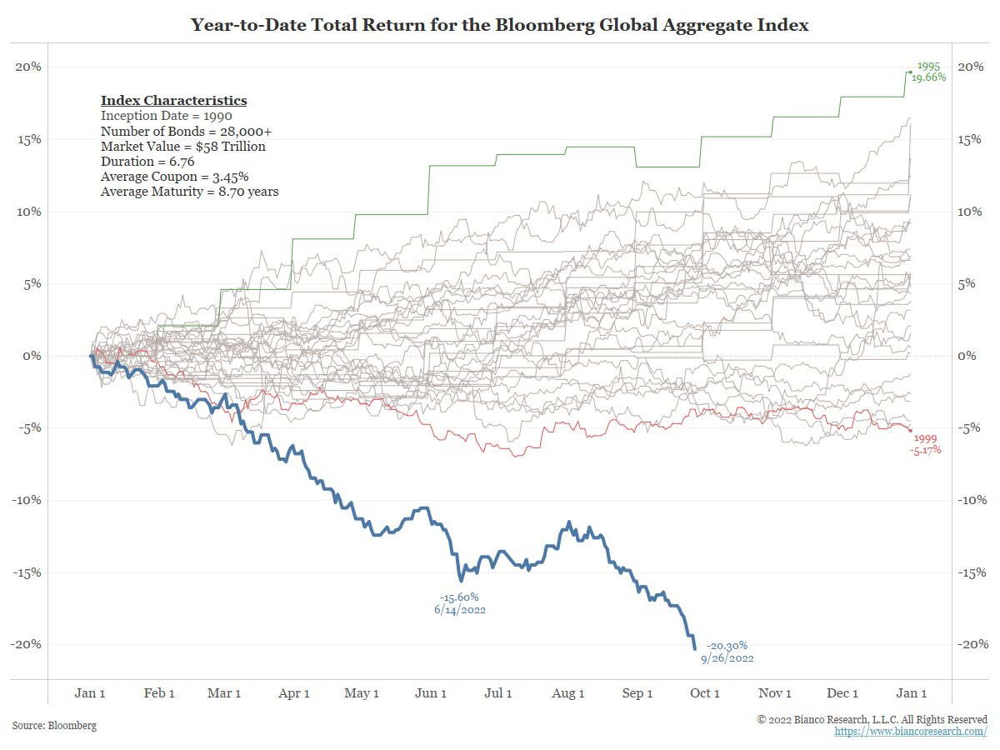
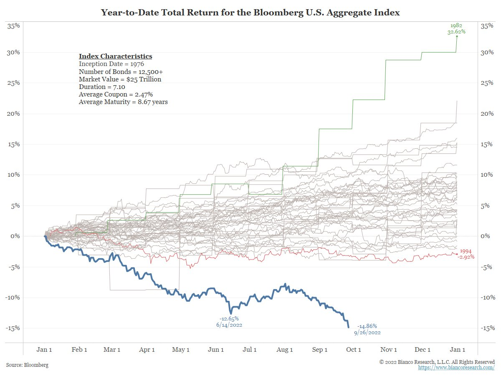
7/1/2022
Atlanta Fed Confirms that we are about to enter a Recession
Most economists use the 10-2 year yield spread and curve to predict upcoming recessions, however the fed today is using the 10 year - 3 month spread. This is likely because it will be the last to flash the warning sign of recession and allow Biden to say things like “We have a very strong economy” as GDP continues to slow.
The NY Fed tells us that, “This model uses the slope of the yield curve, or “term spread,” to calculate the probability of a recession in the United States twelve months ahead. Here, the term spread is defined as the difference between 10-year and 3-month Treasury rates.”
The only tool the Fed has to combat high inflation is raising interest rates, typically ABOVE the rate of inflation, as should have been done a year ago when the economy was stronger in order to avoid the stagflation we’re seeing today. Higher interest rates mean a stronger dollar, and higher interest rates as term duration increases on bonds - a normal and healthy yield curve which rewards people for saving their money in cash longer.
The real rate of return when accounting for inflation on any of these bonds is currently several points in the negative due to price inflation, therefore the Fed needs to continue raising rates until inflation calms down from demand destruction and yields on risk free treasuries trends back towards sensible returns. Until this happens, we will continue to see other currencies fall in value compared to the US Dollar denominated hegemony - “The Dollar Milkshake”.
The Fed is far behind the curve, and the government’s interest payments on $30 Trillion dollars of debt and much more in foreign obligations, will ensure that the Fed remains behind the curve, actually favoring inflation that goes unnoticed in order to inflate away the debt, the only way out is through a hard landing, a deep recession, or returning to Quantitative Easing in order to simply kick the can down the road. This last option of QE is unfortunately not on the table at the moment because the money printing is what got us here in the first place.
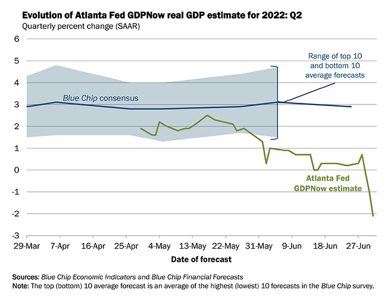
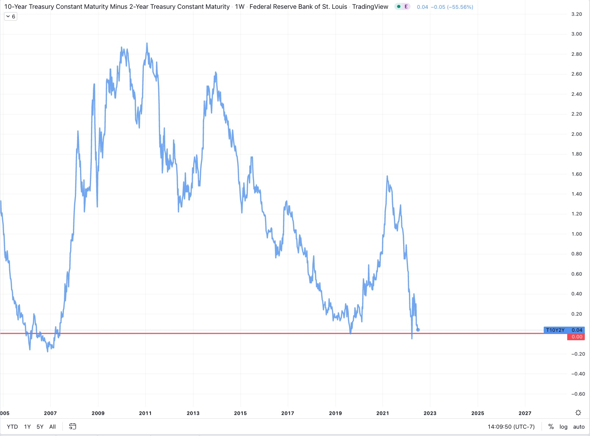
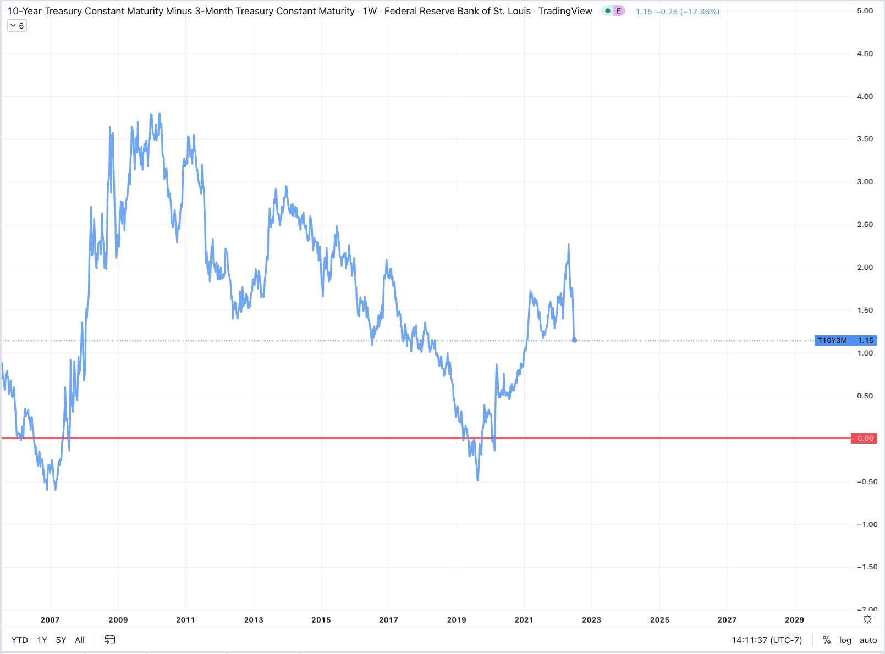
________________________________________________________________
6/30/2022
Energy Price Inflation Soars in Germany and around the World
Americans owe $22 billion in already late utility bills as energy costs in the US rise 34% YOY.
Europe, more directly affected by the Russia Ukraine War has it much worse, Germany specifically is has experienced a 6X increase in the cost of baseload power since 2020. They managed this by increasing their reliance on Russian oil and gas along with shortsighted energy policies and adherence to the ESG narrative at the expense of their own fragility.
In 2020 Germany’s percentage usage of renewables was 46%, largely coming from wind, solar, and hydro electric. The remainder of their energy was from coal, gas, oil, and nuclear.
Despite still struggling to meet their stringent carbon related policies, and despite the now soaring energy costs, Germany has recently upheld the pledge to continue with the shut down their remaining nuclear reactors by the end of 2022, a decision that was decided a decade prior, in the wake of the Fukishima disaster in Japan.
The German government has also pledged to phase out coal - but not until 2038. This series of moves has ensured that their baseload energy consumption is actually getting more carbon intensive, not less. These choices, alongside western imposed Russian sanctions which have increased natural gas prices globally leave the German’s supply of baseload power insufficient for meeting modern expectations or demand.
Germany’s Vice Chancellor warned of a “Lehman like” economic collapse due to their current energy policy, and we are seeing it play out in fast and slow motion.
Germany is extremely close to rationing stores of natural gas, and suggesting it will start with hot water, a luxury some of those living in energy poverty have already forsaken despite their middle class incomes. Today, likely more than 23% of German people are suffering some form of “Energy Poverty” where a significant enough portion of their income goes towards energy, causing them to cut back on other necessities.
With prices so high, and natural gas stockpiles at record low levels, the German Government has announced that they will re-establish the use of previously decommissioned coal-fired power plants. Coal is far easier to bring back online than nuclear, so any future hiccups will likely see expansion of this more carbon intense base energy.
German wholesale oil is up ~70% YOY, and even an end to the war wouldn’t mean that western nations return to direct purchases from Russia, therefore these price increases are likely to remain.
Furthermore,UK newspaper The Telegraph suggests that if Germans won’t stop buying Russian gas, they too should face sanctions.
Lastly, Reuters reports that; Italy, Portugal, Slovakia, Bulgaria, and Romania have joined Germany’s finance minister in opposing the 2035 mandate to ban the sale of new petrol and diesel cars. This move, is postponed would all but ensure that the EU does not meet it’s target of reducing greenhouse gas emissions by 55% compared to 1990 levels before 2030.
Many across the globe will be priced out of the green energy revolution.
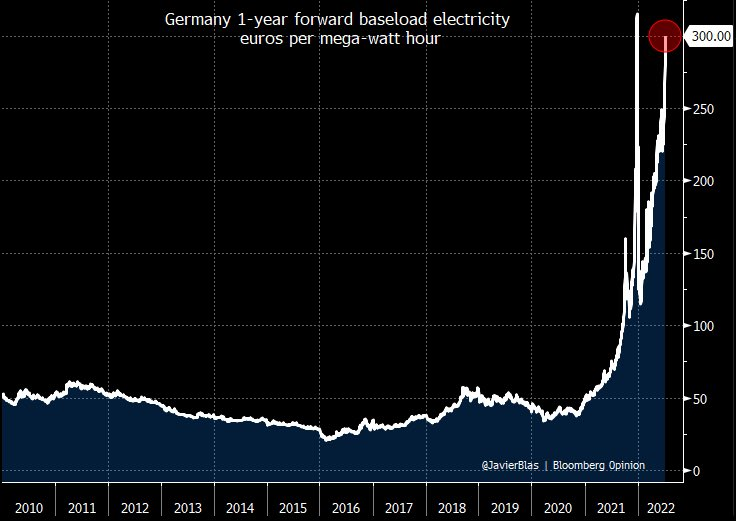
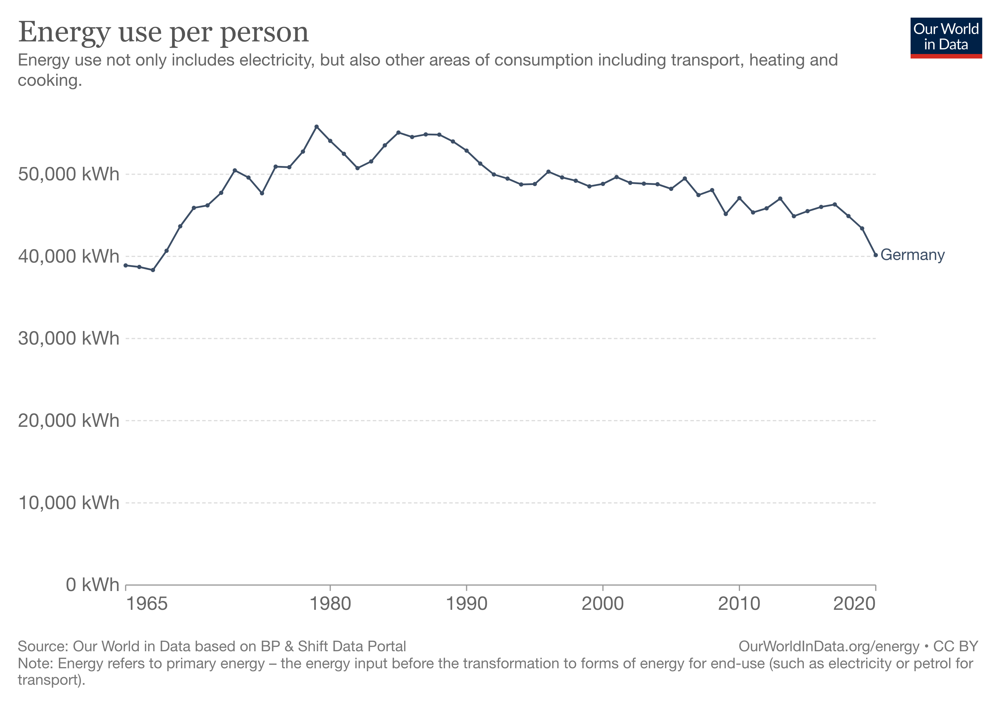
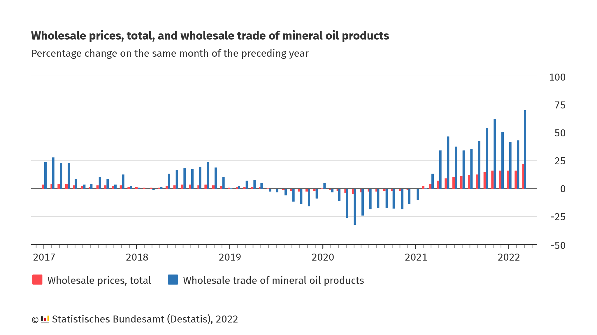
6/18/2022
Update to the Japan Crisis
Japan’s Ponzi Scheme is running out of time. Japan has 12.8 Trillion on the BOJ’s balance sheet and their current debt/GDP is nearly 200%.
They have apparently reached their limit to perform Yield Curve
Control in both the bond and stock market with newly printed treasuries
which cannot find the buyers necessary to prop up the Yen’s purchasing
power against USD. A panic spike in selling lead to Bond yields jumping
up above the governments mandated ability to continue QE driven
purchases without becoming insolvent with a debt/gdp ratio too high.
Market participants selling bonds lead to higher interest payments for a
government that cannot afford it.
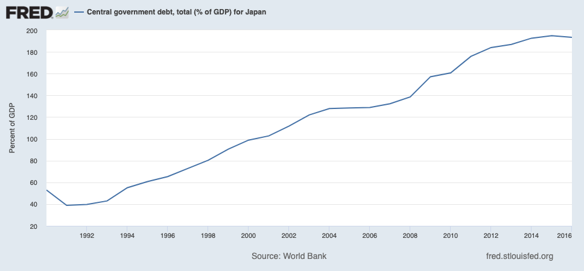
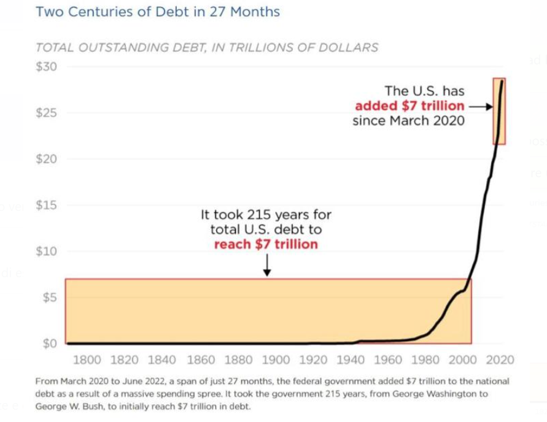
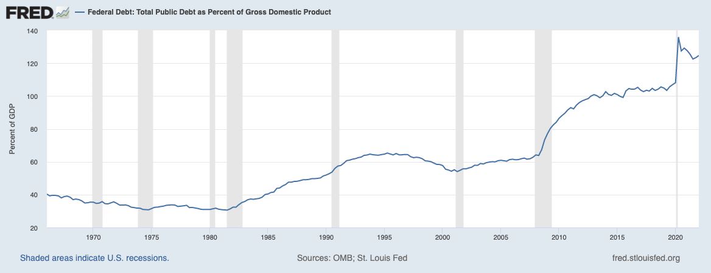
6/9/2022
Japanese Yen spirals against US dollar, the consequences
of endless QE
Japan has been the canary in the coal mine for the last decade, forecasting where us in the US and western nations who are participating in Quantitative Easing might end up. Japan has apparently reached its limits in how far they can go before trust in assets held on the central bank’s balance sheet is lost.
Japan’s debt/GDP ratio is nearly 200%, the highest of any nation in the world.
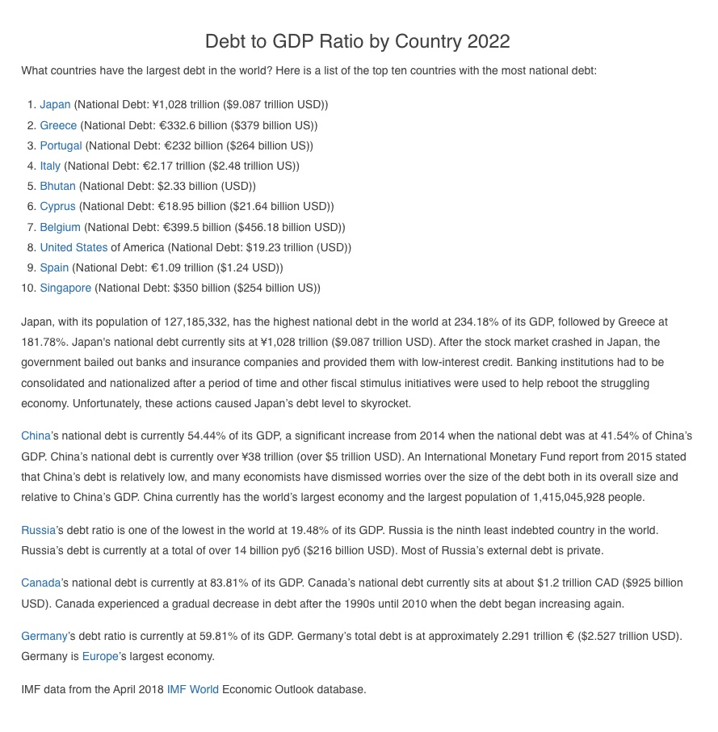
With a debt/GDP ratio this high, the government technically owes money to itself through the central bank’s deficit printing. The problem with having so much debt is the interest rates. Once interest rates begin to rise, so do interest payments needed to remain solvent. Without a robust and increasing GDP for taxpayer generated income for the government to fund the debt, the only option becomes - devalue the debt denominated in fiat currency which has no limitations to creation - inflate it away.
When the M2 money stock goes up, each dollar held by citizens and the government goes down when measured against other commodities, or other currencies which will remain stronger if they are not also printing more money, though the debt, taken out years, even decades ago remains the same. The debt positions can thus continually be serviced with newly created money that has a lesser value, and the longer a nation waits to pay off the debt, the cheaper it becomes.
A true sovereign debt crisis occurred in Greece when their debt was denominated in Euros, instead of their own former Greek currency, the drachma. Since the Greek centrral bank could not control the newly issued wupply of Euros, regulated by the ECB, we saw them enter a period of default where their debts needed to be written down in lieu of a western humanitarian crisis.
Central Banks like Japan, or the United States who can self fund have the advantage especially when interest rates are low, but when entering a period of tightening, and slower economic growth, or even stagflation as we are now, the only tool to create demand destruction and thus lower inflation would traditionally be - raising interest rates to the rate of inflation.
The problem with an inflationary environment is that to solve the problem of inflation, it is all but mandatory to cease the creation of more dollars. Volker of the FED solved this problem in the 70’s by raising rates to match the rate of inflation which was above 10% at the time. The only problem with doing that now is that we have too much debt.
If the US or Japan raised rates this high, to 8-16% to match the current inflation rate, the governments would not be able to finance the interest payments on the debt, and would thus default.
But they can’t print more money either, so it’s necessary to rely on jawboning all markets into demand destruction without raising rates, and so far it’s working.
If this is not effective enough, the US will need to follow Japan’s lead, by implementing Yield Curve Control (YCC).
The aim of YCC is to craft a particular shape to the yield rates on bonds issued by the government. When any entity including individuals are holding treasuries issued by the government, they should be expected to at least retain their value, furthermore, the longer duration of the bond, the higher the expected yield, but with inflation, this becomes a problem.
Therefore, it has become necessary for the Bank of Japan to participate in yield curve control, printing money to directly purchase bonds and prop up the market. In addition to this, the BOJ is also purchasing stocks on the open market as well, something previously unheard of.
This has a two pronged effect; firstly is staves off insolvency for Japan, for now, they are able to service their debt’s on the balance sheet with new dollars, but secondly, it has eroded trust, and yield from all of their markets is gone leading investors to seek yield elsewhere.
If this persists, a debt driven deflationary spiral that leads to insolvency could follow, and it could be both abrupt, and catastrophic as it was for Greece who needed a bailout from the ECB.
Japan’s 10 year yield has been below the US 10 year yield for a decade now leaving less access to liquidity for paying off debts, but also Japan’s stock market has not reached a new all time high since 1990, in fact, it’s still down 26% from that date. Money is fleeing the country and GDP will remain low, threatening insolvency indefinitely.
The Japanese Yen is loosing value compared to the dollar, but the Dollar is loosing value compared to commodities and will inevitably face the same fate if we continue the current regime.
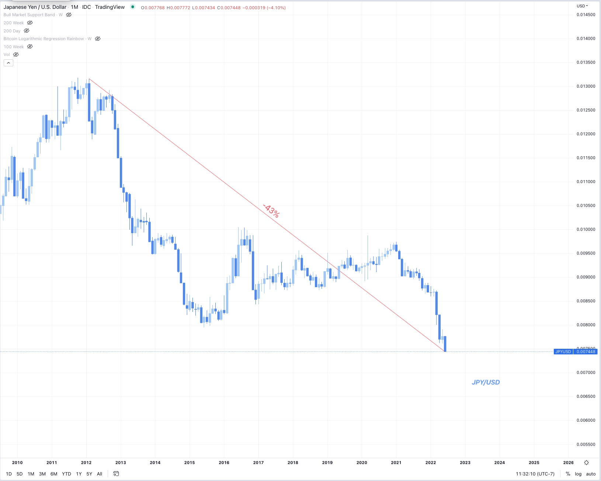
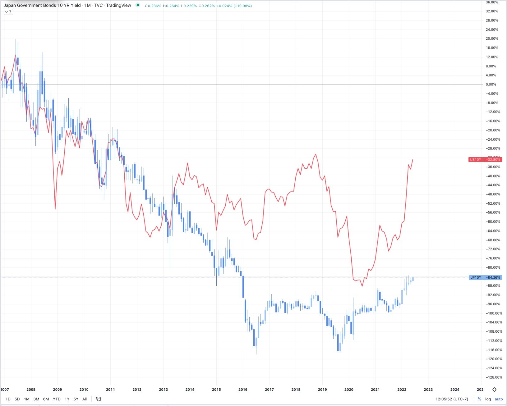
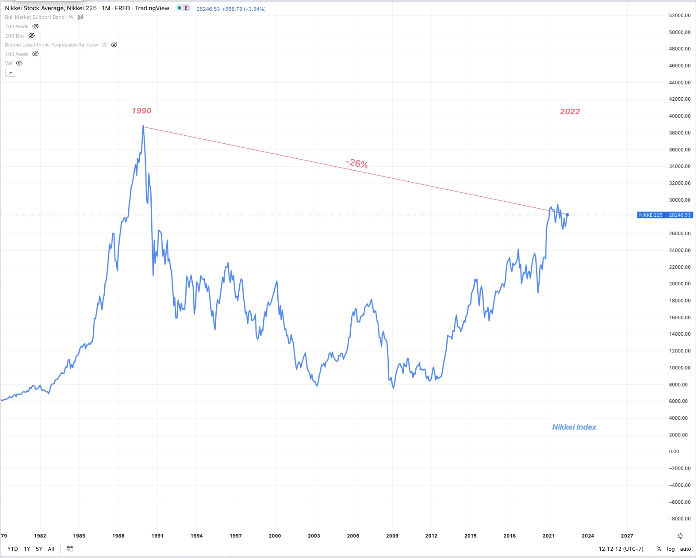
6/7/2022
Federal Reserve Releases Hilarious
Hit Piece on Bitcoin
The FED has released a chart comparing Bitcoin’s purchasing power against the price of supermarket eggs. They suggest that this is the reason Bitcoin is not a good store of value.
This is the chart presented.
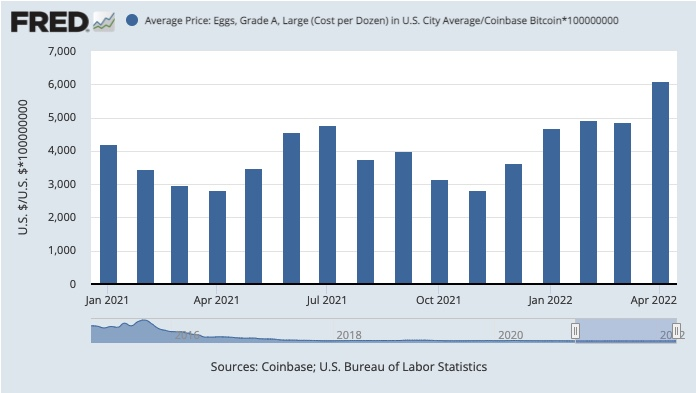
It only takes a moment to realize that the data is completely cherry picked from the last two years, and if you choose to drag the view options back to the inception of Bitcoin in 2009, their very same chart simply tells the opposite story.
If you were to have held Bitcoin instead of US dollars for nearly any
period of Bitcoin’s existence, your purchasing power measured in eggs
would have only increased, and significantly.
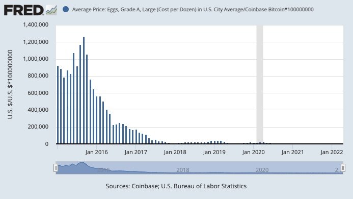
The US dollar has lost 95% of it’s purchasing power against commodities, goods, and services over the last several decades. It is interesting however that the FED finds the need to attempt to make these silly comparisons.
________________________________________________________________
6/6/2022
Natural Gas prices spike, World Food Crisis Looms
Many countries are being threatened with immediate food shortages,
not next year or next month, right now. The current situation involving
Russia-Ukraine is greatly exacerbating the problem. Known as the “bread
basket of the world” which also includes Belarus. These countries make
up more than 1/4 of all global grain trade, and Russia have announced
that they will restrict grain trade within “Friendly
countries.”
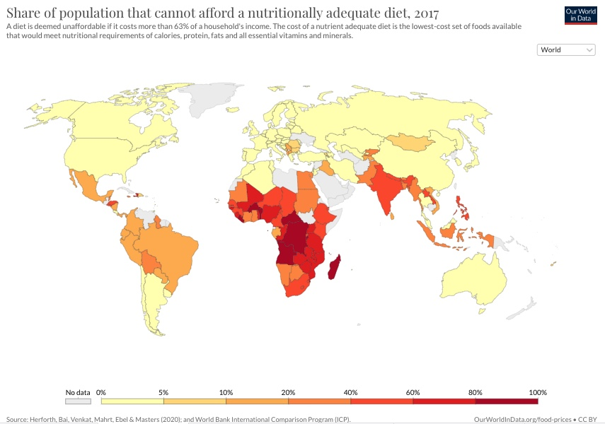
*Note: This is 2017 data, pre pandemic, pre money printing from the FED, and before war in Ukraine, unfortunately it only get’s worse from here.Furthermore, fertilizer is made through a process invented by Fritz Haber and Carl Bosch who is often credited alongside Norman Borlaug, inventor of genetic modification, for being the catalysts of the “Green Revolution” in the late 50’s to which they are credited with saving hundreds of millions of lives. Today, 50% of peoples food supply relies on both genetic modification of staple food crops which are pest and drought resistant, but also their growth is dependent on the Haber-Bosch process which uses nitrogen fixation to produce ammonia. Previously, many farmers would need to go through the season long process of planting nitrogen fixing plants to revive this necessary chemical. Today, it can be purchased in 1000LB+ quantities and applied at will. This is how we currently feed the world. Cheap fertilizers that contain ammonia are the reason the world population was able to move from 3 Billion people to nearly 8 Billion today.
Haber Bosch Process: {H^{}=-91.8~{}}
Historically
fertilizers have been cheap, relying firstly on the recent boom in
availability from the recent discovery of previously untappable oil
reserves, this, alongside the deflationary pressures of technology
evolution, lead to continually declining prices of methane (CH4) and
ultimately the manufacturing process of fertilizers.
Secondly, fertilizers are made from nitrogen as we know, but also
potassium and phosphorous, and Russia and Ukraine previously made up 28%
of all global fertilizer supply. Given equal and consistent demand as
farms tend to have, supply constraints will mean higher prices.
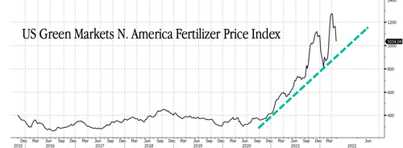
Recently, after Russia’s foreign treasury reserve assets held internationally were seized in the first ever occurrence of this sort which pokes a hole in the supposedly unbiased petrodollar hegemony, Russia retaliated by forcing purchasers of Oil and Gas to procure Russian Rubles to make those purchases through Russian banks who were cut off from the SWIFT network. This new demand for Rubles has caused it to outperform the US dollar, gaining purchasing power, and leading to higher prices on Natural Gas, of which Europe gets 40% of its gas from Russia.
European citizens have been experiencing a condition known as being “energy poor” where the average middle class family has all the modern amenities that we have in the US for example, but cannot afford to heat their homes, or use a hot water heater due to the skyrocketing prices of natural gas, both over the last decade due to ratcheting carbon tax tightening as well as the European Central Bank’s inflationary money printing, both causing prices to rise for end consumers.
On top of that, Europe has sanctioned fertilizers
and from Russia and Belarus, which will also lead to inflationary prices
for end consumers. While France is the European country that has the
closest to a carbonized energy grid, made up of mostly nuclear, Germany
has recently decommissioned the last of the nuclear plants and replaced
their energy with mostly coal and natural gas from Russia. The German
society is now highly dependent on Russian gas, and a global divestment
from fossil fuels in general means that there is not much more supply
coming online for the next several years.
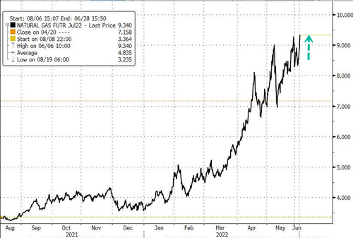
Together, this makes up the perfect storm for higher input costs from lack of fertilizers, and direct blockade of supplies from Russia, and now other countries which refuse to export certain items like China who has been accumulating food stores for years, now hoarding half of the world’s grain. Malaysia is banning the export of Chicken. Indonesia recently took to banning the export of Palm oil due to a poor harvest, which drives the price of palm oil up. This price increase leads to more deforestation in the amazon and southern Asia where palm oil is the majority of export crops, but it also incentives wheat farmers in the US - another large wheat producer- to flip and plant more soybeans for soybean oil instead of wheat, again driving wheat prices higher. India bans the export of wheat. This is a problem because wheat is in basically all the processed foods.
Joe Biden has been making the rounds to world leaders hoping to convince them to increase supply and drive down prices. He offered India $4 billion to export more wheat which they rejected. He asked Saudi Arabia to export more oil which they said they couldn’t do due to already tight supply constraints. We have such a significant problem that America’s past actions and alliances can be ignored in the search for more oil. We formerly accused Nicolas Maduro of both election fraud, then later drug trafficking in order to attempt to install the US-friendly Juan Guaido who never fully assumed power. Recently, Biden reached out to Maduro to try to procure more Venezuelan oil that should have originally been destined for our largest refinery owned by the Koch brothers in Corpus Christi, Texas. However, The political blowback of a nation supposedly aligned with Russian interests was nearly enough to shut down these talks, but it looks like we don’t actually care about politics or what we used to call Russian aliance, because it looks like Venezuelan oil may begin to be imported soon. This is all a result of US involvement in the Russia Ukraine war when we banned Russian oil imports to America.
We have no oil, we’ve released all of our strategic reserves, and we dont have the wells, refineries, or infrastructure to bring supply online to meet demand, therefore price must rise. Chevron’s CEO has said that he does not see any new oil refineries ever coming back to the US. This is in part due to the horrendous permitting and regulation process which can take time measured in years, and money measured in the millions, only to get approval, even nearly finish construction, costing billions, to then have the project held up in court for another several years and threaten its very completion. This is what happened to the Mountain Valley Pipeline in Appalacia which contains our largest natural gas reserves, and the Jordan Cove LNG pipeline in Oregon which developers abandoned. These projects are now sunk costs worth billions on investors balance sheets, definitively scaring away any new investors.
The environmental movement has a process of blocking new fossil fuel infrastructure that can sometimes be very effective. petitions, protests, court appeals, biodiversity, larger environmental concerns, damage from spills, air, noise, and unethical pollution, these things are all excellent and effective tactics that the environmental movement uses to block new fossil fuel infrastructure. The majority of the public is simultaneously on the side of the environmentalists wanting to make the world a batter place, but also desiring lower costs for gasoline at the fuel pump. The pendulum has swung too far.
The realities of economics and commodity inflation have already caught up with us and if we continue to invest in new fossil fuel infrastructure, oil prices will increase and remain high due to constrained supply. Of course, we also need to optimize out investments in green tech as well because many of the environmentalists concerns are warranted. Hoowever, renewables largely do not have the tech or the cost effectiveness to outcompete oil in most places, the cost of EV’s and the chips that run them are only going up due to all the supply shortages caused by quantitative easing which is necessary to keep the US from a debt driven collapse.
These intricate complexities only lead to regressive outcomes hurting
those who cannot afford green tech, while also demonizing them for their
supposed dirty emissions in what is quickly becoming a class divide
driven by inflation and market manipulation from the Federal Reserve. We
need to tackle climate change, but we don’t need to go overboard, and
what we’re doing right now is not necessary even according to the IPCC
and the IEA who don’t see any concerning tipping points until we reach a
global temperature over 4 degrees celsius, which they project us to
remain well under. Optimal policy is difficult, and the current two
sidedness and bias towards extremity in order to gain moderate results
is not helping.
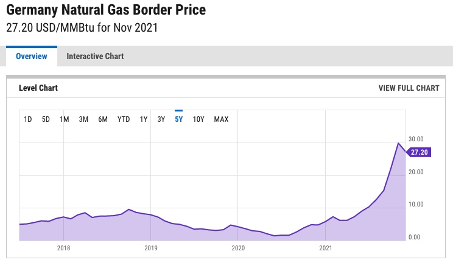
Reshoring of goods, services and commodities into our borders makes for a self sufficient economy, but globalization and free trade make for cheaper goods and a more diverse and growing global economy which predominantly benefits developing nations, but we cannot have both sides of the extreme. Privatization also matters, Venezuela is rich in oil, but poor in their Bolivar’s exchange rate, nationalization does not work when the government is allowed to continually operate at a loss, hyperinflation has arrived for Venezuela, and will continue to increase across the world as energy runs the show and the economy.
What was previously a perceived environmental win of slowing investment in fossil fuel infrastructure is now causing mass starvation for wage earners across the globe who cannot keep up with food price inflation. Those consumers who will not or cannot pay, will be forced to change their purchasing behavior and some will starve or become malnourished for lack of cheap and healthy food. Famines are created not by God, but by man.
The Food and Agricultural Organization price index tracking month over month and year over year changes shows every key agricultural product up significantly year over year as well as Cereal prices, which includes wheat, up by 30%. Every food that contains wheat will need to either rise by 30%, or the company selling it will need to choose to take what is for them hopefully* a temporary* loss to keep their customers.
In a United Nations press Release, Antonio Gutierrez said, ““When war is waged, people go hungry…Most important of all, we need to end the war in Ukraine.” The security council quotes Antony J. Blinken, Secretary of State of the United States, “Recalling WFP and FAO estimates that people affected by food insecurity due to conflict would increase to an estimated 161 million in 2022, noted that the Russian Federation’s war in Ukraine could add another 40 million people to that total. That country’s flagrant disregard of resolution 2417 (2018) is just the latest example of a Government using the hunger of civilians to advance its objectives. The food supply for millions of Ukrainians and millions more around world “has quite literally been held hostage by the Russian military”, he said, noting 20 million tons of grain sit unused in Ukrainian silos as food prices skyrocket.”
Defense spending is both fine and desired, but war is bad for
business, let’s stop fighting and funding proxy wars that aren’t on our
soil.
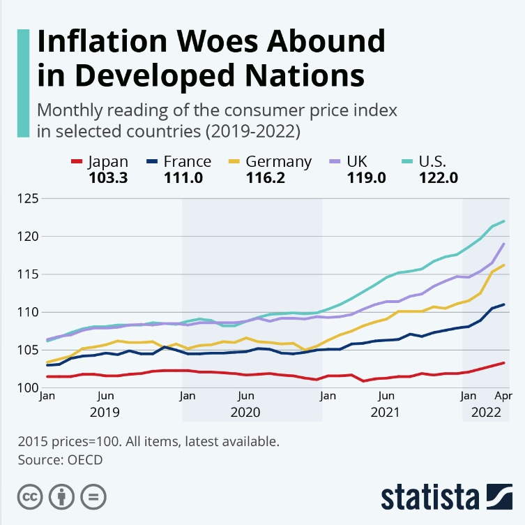
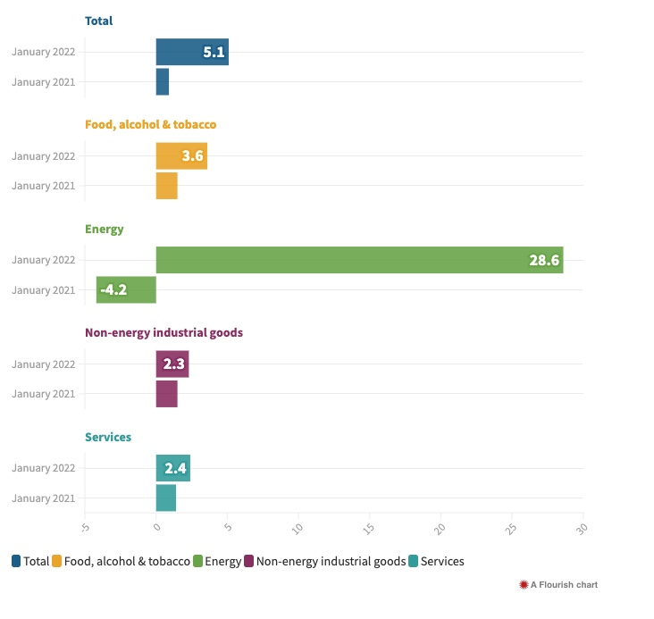
There’s no use hoping inflation will come down, and producers know this,
the debt/GDP ratio shows us that it will continue for the rest of the
decade unless the US chooses to default or cause a recession which is
far worse than 1929 due the the amount of leverage across all markets.
Officials will never choose either of these options, they will always
choose inflation with short term periods of demand destruction as we’re
experiencing now. Macroeconomist Luke Gromen calls this “Peak Cheap
Oil.”
Shadow Stats is a company currently tracking CPI inflation much more accurately than the massaged US government numbers, they do this by using the US government’s former calculation methods instead of the new ones which were recently changed several times to fit the narrative. Currently Shadow Stats has inflation above 16%, much closer to prices in the real world. Wheat inflation is now 30% year over year.
The healthy and reasonable way to fix this is to cause short term demand destruction in financial markets and commodity futures today, while the economy is still relatively strong and raise interest rates to the rate of inflation - the Volker method. This alongside a significant reduction in federal expenditure is necessary for the economy to recover in real terms, instead of waiting for stagflation to continue, for a recession to get worse, and only then attempting to raise rates into an economy already in a depression. If the FED doesn’t pivot within the year, this is where we’re headed. The FED is out of options, and not only are they behind the curve, they are also late to the party and too slow to act, and because of this people will starve.
________________________________________________________________
6/1/2022
Federal Reserve Begins Quantitative Tightening
Today
The Fed will begin selling UST’s and MBS’s. There are many reasons for markets to buy US Treasuries, they are universal pristine collateral across the world, but when the Fed begins selling Mortgage Backed Securities, there becomes more supply of them, less demand for their use as collateral, and there is only one buyer - pension funds forced to purchase them by mandate to “reduce risk.” MBS interest rates will increase as selling occurs and price goes down, and the housing market will stall over time. The real risk comes when these investments have negative real yields against inflation and pension funds begin to fail unless they can adjust the regulations in order to find better yields.
We only have one period of QT to base our expectations off in 2018, and we are now tightening into a slowing economy, interestingly enough the S&P actually was flat/went up slightly during the last period of tightening.
Let’s see how far they get before something breaks. Last time that happened was 2019 when it took a liquidity event in the reverse repo market to abruptly end QT and reverse course to QE infinity.Covid provided excellent cover for this, and climate change will provide the next.
As M2 money supply increases, so does counter party risk on banks balance sheets. If all the banks are holding are promises of payment, trust can erode quickly. These banks are now (apparently) so concerned that their formerly pristine assets - US treasuries and Mortgage backed securities - will fail, potentially overnight, as happened in 2008 that they are placing ever increasing amounts of risk on the balance sheet of the Federal Reserve in the overnight repo market. The government will print more money before they become insolvent.
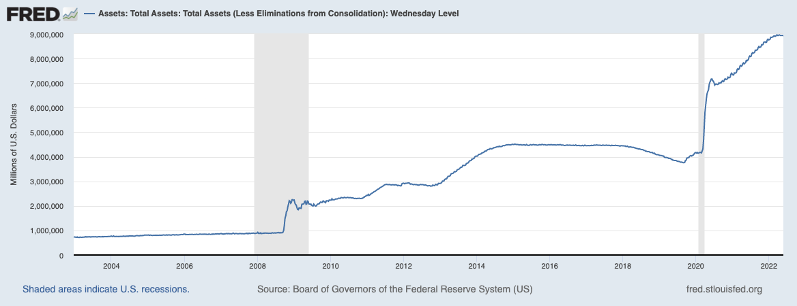
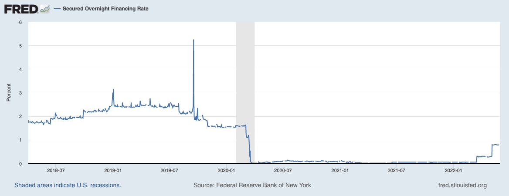
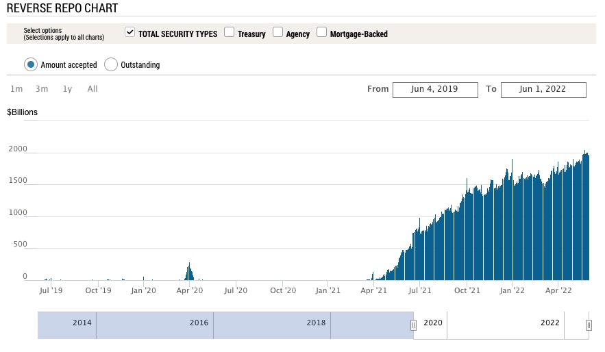
_________________________________________________________
5/31/2022
Biden’s Plan to Combat Inflation
Biden wrote an op-ed for the Wall St Journal where he announces
his three step plan to fight inflation. This is just after his previous
plan released just days ago.
- The New Plan:
- “First, the Federal Reserve has a primary responsibility to control inflation. My predecessor demeaned the Fed, and past presidents have sought to influence its decisions inappropriately during periods of elevated inflation. I won’t do this. I have appointed highly qualified people from both parties to lead that institution. I agree with their assessment that fighting inflation is our top economic challenge right now.”
- “Second, we need to take every practical step to make things more affordable for families during this moment of economic uncertainty—and to boost the productive capacity of our economy over time. The price at the pump is elevated in large part because Russian oil, gas and refining capacity are off the market. We can’t let up on our global effort to punish Mr. Putin for what he’s done, and we must mitigate these effects for American consumers. That is why I led the largest release from global oil reserves in history. Congress could help right away by passing clean energy tax credits and investments that I have proposed. A dozen CEOs of America’s largest utility companies told me earlier this year that my plan would reduce the average family’s annual utility bills by $500 and accelerate our transition from energy produced by autocrats. We can also reduce the cost of everyday goods by fixing broken supply chains, improving infrastructure, and cracking down on the exorbitant fees that foreign ocean freight companies charge to move products. My Housing Supply Action Plan will make housing more affordable by building more than a million more units, closing the housing shortfall in the next five years. We can reduce the price of prescription drugs by giving Medicare the power to negotiate with pharmaceutical companies and capping the cost of insulin. And we can lower the cost of child and elder care to help parents get back to work. I’ve done what I can on my own to help working families during this challenging time—and will keep acting to lower costs where I can—but now Congress needs to act too.”
- “Third, we need to keep reducing the federal deficit, which will help ease price pressures. Last week the nonpartisan Congressional Budget Office projected that the deficit will fall by $1.7 trillion this year—the largest reduction in history. That will leave the deficit as a share of the economy lower than prepandemic levels and lower than CBO projected for this year before the American Rescue Plan passed. This deficit progress wasn’t preordained. In addition to winding down emergency programs responsibly, about half the reduction is driven by an increase in revenue—as my economic policies powered a rapid recovery.”
- In other words:
- Blame the FED, Trump, Russia, and define the oil industry as “autocrats” - the high inflation, it’s not Biden’s fault.
- Reiterate that even though we continue to choose to sanction Russian oil and gas, like Europe who’s heading towards the largest energy shortfall in decades, forcing the public to spend higher and higher percentages of their income on energy (causing the especially vulnerable and elderly to literally freeze to death if they can’t afford heat - a real and increasing problem) This is framed as something we need to do it to ‘stick it to Putin.’ Next, release all US strategic oil reserves to artificially bring down price - temporarily, (this was already done, reserves are now at decades long lows) then pass green energy tax credits and spend more money to further investments in the space. Then spend more money to fix supply chains and improve infrastructure. Then begin “cracking down on the exorbitant fees that foreign ocean freight companies charge to move products,” (here come the price controls). Then build a million homes. Then give pharmaceutical companies the ability to negotiate, but also “cap the cost of insulin.” (There they are)
- Reduce the federal deficit which is supposedly will contract by $1.7T (That is, if we compare Year over year numbers to the last two years when we printed more than 25% of M2 money supply, causing a massive federal deficit, it’s easy to see how the “deficit shortfall” will come down, even while net deficit will go up)
Analysis:
The problem is that despite the negative connotation, Biden is right - Oil companies are autocrats, they have ultimate control over global energy markets and thus the economies of the world, there are very few things which are more important to our way of life than oil. A reduction in production and consumption of oil and natural gas (or higher prices) means more crop shortages, fertilizer shortages, supply chain issues, mass starvation and malnutrition especially in the third world, decreased economic activity globally, higher unemployment everywhere, individual savings evaporate, wealth inequality is exacerbated, etc. We need oil to run the world, and lots of it. Cheap oil makes everyone better off.Furthermore, if climate change were to enter the conversation, one needs to ask; what is the carbon footprint of spending and sending 40 Billion to Ukraine in our funding of the newest proxy war started immediately after the last. All thew way back in a 2011 interview, Julian Assange states, “The goal is to use Afghanistan to wash money out of the tax bases of the US and Europe through Afghanistan and back into the hands of a transnational security elite. The goal is an endless war, not a successful war.” Nothing has changed, additionally, EV’s are nowhere near cost effective enough for global transportation and they won’t be so globally until at least the mid 2030’s when the majority of developed nations have gone through a generation of EV cars and they can filter through the used markets into developing nations. Green energy and heating production is not efficient enough in most locations and won’t be for some time, tax credits are nice incentives and it’s yet to be seen if the average consumer will save $500/year on their energy bill as Biden says. The rest of his plan involves spending more money that GDP is not bringing in as we head into another negative quarter of growth, which will thus increase the deficit. Inflation is always a monetary phenomenon, spending more money will make inflation worse, not better. The same goes for his previous plan mentioned above, every single line item (many taken from build back better) will involve spending massive amounts of money, multiple trillions, created by the Treasury, adding to the federal deficit - which is the primary cause if inflation.
The way to solve consumer price inflation is to bolster the actual GDP output of the economy, create more literal goods and services without creating more dollars - More goods being chased by fewer dollars drives inflation down. That’s the fun way, the alternative is demand destruction by economic recession, if no one has money to buy anything, demand also goes down. That’s unfortunately where we’re at while simultaneously placing higher taxes and price controls on the very producers who are capable of solving the problem (oil companies etc.) While some of the proposals in the long run (decades) could bring down inflation - now is not the time to increase deficit spending, the time would have been when (real) GDP was strong, when interest rates and (real yields) had already been (much) higher for years, spend when you have the money, not when you don’t.
- Conclusion
Spending now only digs the grave of the debt driven deflationary spiral deeper once it does arrive, we no longer have high interest rates as a tool to combat inflation, the deficit is too high and will drive the US to insolvency, but I imagine they intend to inflate the bubble a few more times before that happens, the 2019 repo crisis is evidence enough of that sentiment. It’s getting harder and harder to ignore the missteps at every turn, and incompetence is often indistinguishable from malice.
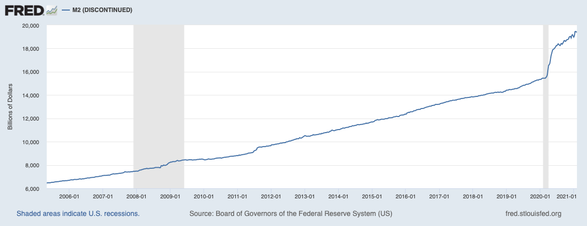
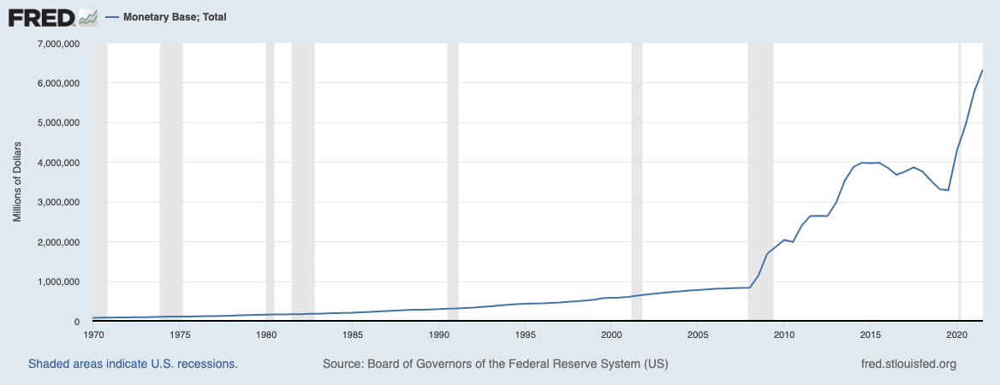
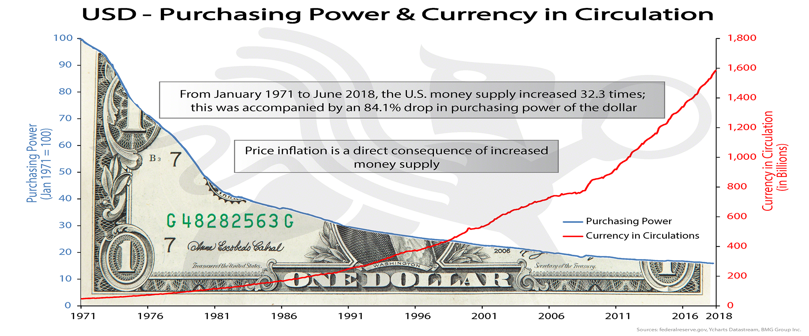
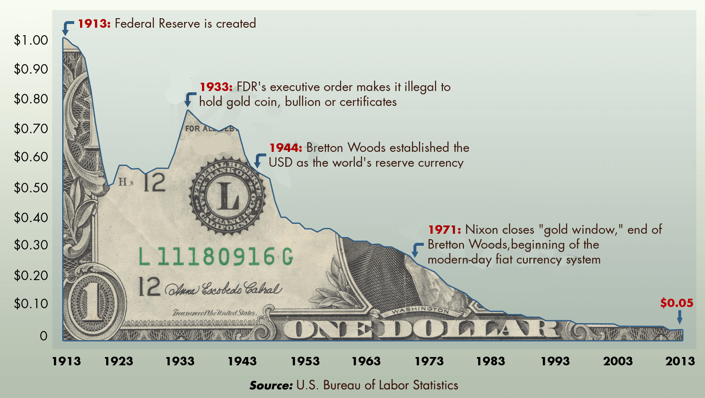
________________________________________________________________
5/29/2022
Traditional Markets
Gavin Newsom suggests $11bn in stimulus to combat gas price inflation - lol. Inflation is always a monetary phenomenon - more money in the system chasing the same goods results in higher prices. Next on the list of things not to do will come price controls. Taxes on energy and necessities are always regressive as seen in Europe and well covered by Zero Hedge and Doomberg. CA has the highest taxes on gas, hurting those that can least afford it most, as does inflation.
Running to take Newsom’s spot as governor, Micheal Shellenberger has a much better understanding of the economy and energy markets as described in his own Substack. I wish him luck in his candidacy.
China’s small-medium banks are insolvent? - Customers unable to access funds for a month. Lots of turmoil due to ridiculous lock downs, occams razor pivoting towards China will not open up until Europe is in official recession. US and Europe already in recession, but the time it’s acknowledged, it will be nearly over if it still likely ends with a fed pivot. via Reuters
China is loosening by record amounts to make up for weak (or collapsing) housing market in China who does a lot more adjustable rate loans. (Evergrande’s toxic balance sheet?) China needs citizens taking new loans so they’re cutting rates, debt driven systems need more debt and inflationary bailouts. Current system is tight and desperate for new money.
Oil likely to rally further (short term) with Strategic Reserve depleted, moreso if China re-opens, in this stagflationary environment, price inflation will continue even if YOY numbers go down slightly. Longer term, demand destruction may prevail alongside low growth to bring down oil prices.
Bear market rally confirmed in traditional markets, back to risk on, temporary and short term mean reversion setting up for potential or likely lower lows in line with the high time frame mean reversion after decade long bubble in risk.
Fed announces only two more hikes, then data dependent, Powell is great at letting the markets know what should be expected.
Redfin reporting 1/5 home sellers drop prices last month
Redfin “The monthly mortgage payment on the median asking price home declined slightly from a record high to $2,425 at the current 5.1% mortgage rate. This was up 42% from $1,708 a year earlier, when mortgage rates were 2.95%…Pending home sales were down 5.4% year over year.”
Fed Raising rates resulting in huge mortgage rate increase, highest since 2008, bond prices set to rally as safe haven compared to real estate.
University of Michigan “home buying conditions” are the worst they’ve been since the 1980’s - Zero Hedge
Crypto Markets
BTC playing catch up over the weekend, riskiest of risk assets will lag. Eventual decoupling will result in BTC being risk off, but this still seems like a distant future.
BTC Peak Fear and greed index recently reached 8 (now 10) - Extreme fear, good long term buy indicator despite potential further downside.
Alt/BTC pair is likely to continue to bleed until BTC shows monthly strength, BTC maxi’s always have a good point.
Charts
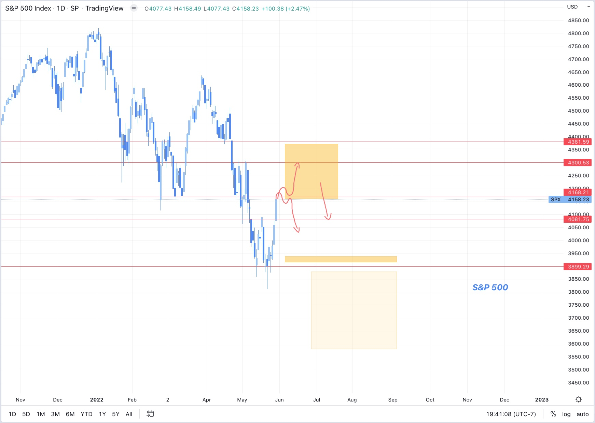
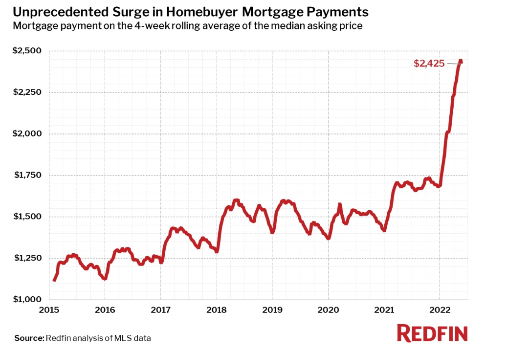
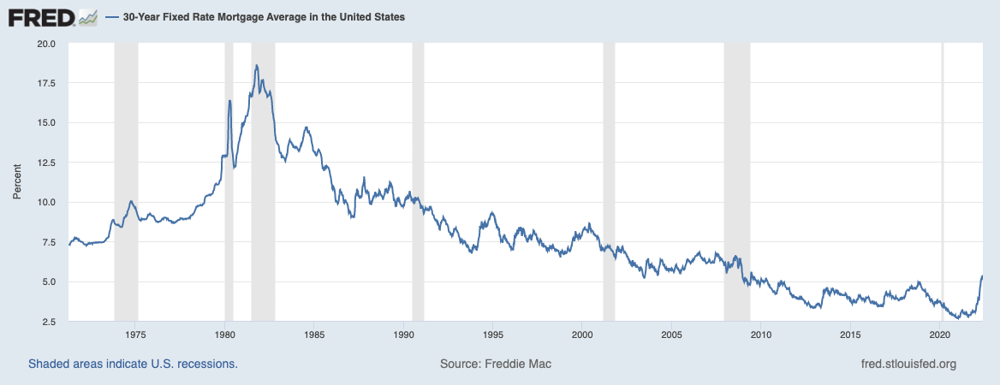
________________________________________________________________
5/27/2022
Traditional markets are having a nice rally after solid support at S&P:3900, now above 4100. Still low call volume.
Volatility will likely remain high for several weeks.
Consumer savings accounts shredded, American’s are not able to adjust spending to keep up with newly higher prices. - chart from Zero hedge.
BTC Down, everything else up, correlation with risk is breaking, but not in the fun direction. Price action closes hourly low below the range low, Longs getting trimmed until clarity in PA. BTC is the most risky of risk on assets, will potentially rally last under a bear market rally.
BTC dominance likely to continue to stay flat or rise whether we go up or down, Alts have been rekt with no end in sight, good prices, but no strength in BTC means alts could drop another 60%+ from here.
Lumber futures are down big at peak building season, houses should be being built but no one’s buying wood, long term housing shortage will continue until prices fall significantly.
NYT changes tune on Ukraine war - Ukraine can’t win. (While typing I defaulted to writing “we can’t win” - American’s don’t want or need another proxy war.)
Voter turnout hits record numbers in Georgia as Dems switch sides leading to massive positive swing for Republicans, could foreshadow future problems for Dems as many have already been forecasting, potentially even more reason for a FED pivot prior to November.

5/25/2022
Short term outlook:
DXY and US10YR threatening to roll over (a point for the bulls, finally)
S&P & QQQ (&BTC) looking at a bear market rally, possibly 7-15% from bottom
BTC target 35k then possibly run the 25K lows if bottom falls out of tradfi
Ideally 10 year falls for the right reason (inflation expectations down) rather than the wrong reason (growth expectations down)
Call option volume remains low, all markets still waiting for buyers despite massively oversold conditions
Longer term outlook:
Base case is:
Possible bounce here
Possible lower lows after - lots of entities looking for exit liquidity and a rotation out of growth to value and commodities for what is potentially a commodity driven stagflationary supercycle - this would not be great but it’s potentially unavoidable (though with more QE, growth will come back as well)
Possible rally into November midterms,
Fed may sell Mortgage backed securities back into the market despite rapid rise in rates, housing will take a hit regardless
Fed hiking could stop Q4 2022 (Currently market is pricing in later 2023 or 2024 - but they won’t get that far) at which point when the hiking stops, the low will already be in, markets are forward looking and will recover far before the economy does.
Economy looking at higher unemployment, lower wage growth, higher consumer credit to come, increased home sales and defaults, etc. real stagflation driven mainly by monetary QE, but also sanctions, and supply chains, all with no real painless solution that isn’t more governmental jobs programs/Universal basic income/ socialized losses to subsidize government errors etc.
They will try to inflate the long term debt bubble a few more times before they let it pop and try to implement CBDC’s as the savior, by this time BTC will be in the “early majority” stage of the adoption curve and by enough people learning about the faults BTC corrects in the monetary system, traditional finance will become fractured towards a dual system solution, one forever inflating, one forever deflating.
_________________________________________________________
5/24/2022
- Bear market rally in QQQ less obvious
- Was Friday rally enough to calm these extreme oversold
conditions?
- Larger uncertainty now
- Still bullish on long term price trend and eventual FED pivot,
possibly before NOV midterms, but short term pain seems imminent
_________________________________________________________
5/23/2022
- Possible bounce here, then we’ll see. Markets on edge, everything
oversold but still waiting for buyers.